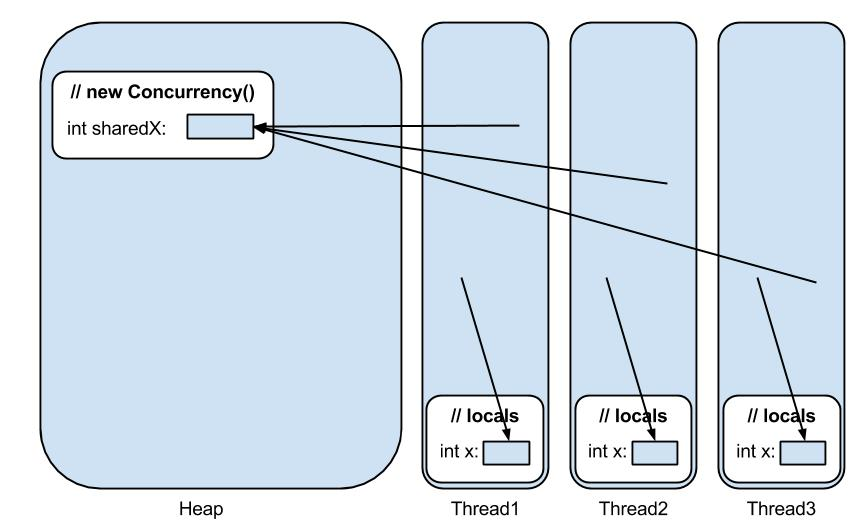

5 - Concurrency
Concurrency innebär samtida exekvering av kod. I java sker detta m.h.a. trådar, och i denna tutorial ska vi titta på problem som uppstår när flera trådar läser och skriver till samma minnesplats.
I ) Heap och Stack
I JVM:en så delas minnet upp i stack och heap. Lokala variabler, inklusive metodargument, lagras på stacken. Objekt som skapas med "new" (Inklusive deras fält) lagras på heapen.
Varje exekveringstråd har sin egen stack, men alla trådar delar på en och samma heap. Detta innebär att två trådar som vardera skriver till samma objekt på heapen riskerar att skriva sönder varandras data.
II ) Kodexempel
Klassen nedan har ett fält (int sharedX), en metod (addOne) samt en lokal variabel (int x).
När man skapar ett nytt objekt av typen Concurrency så kommer minne att allokeras på heapen för bland annat variabeln "sharedX". Först när metoden "addOne" anropas så kommer minne att allokeras på aktuell tråds stack.
Se concurrency/src/Concurrency.java
public class Concurrency {
public int sharedX;
public void addOne() {
int x = sharedX;
x = x + 1;
sharedX = x;
}
}
III ) ConcurrencyTest
För att påvisa problemet med att flera trådar läser och skriver till samma minnesplats så finns ett test av Concurrency-klassen. Koden i fråga skapar upp ett objekt av typen Concurrency (Alltså på heapen), sedan låter testet 10 trådar få tillgång till objektet i fråga, och alla kommer att anropa addOne om och om igen.
Trots att man har anropat addOne en miljon gånger så kommer variabeln sharedX med störta sannolikhet inte att ha värdet en miljon.
Koden finns under concurrency/src/ConcurrencyTest.java
import java.util.concurrent.ExecutorService;
import java.util.concurrent.Executors;
import java.util.concurrent.TimeUnit;
public class ConcurrencyTest {
private static final int LOADS = 1000000;
public static void main(String[] args) throws Exception {
Concurrency target = new Concurrency();
target.sharedX = 0;
addMillionTimes(target);
if(target.sharedX != LOADS) {
String message = "Fail! (Expected target.x to be %d, but it was %d)";
System.out.println(String.format(message, LOADS, target.sharedX));
} else {
System.out.println("Success!");
}
}
private static void addMillionTimes(final Concurrency target)
throws InterruptedException
{
Runnable task = new Runnable() {
@Override
public void run() {
target.addOne();
}
};
final ExecutorService executor = Executors.newFixedThreadPool(10);
for (int i = 0; i < LOADS; i++) {
executor.execute(task);
}
executor.shutdown();
executor.awaitTermination(30, TimeUnit.SECONDS);
}
}
IV ) Minnes-skiss
Här kommer en fin bild som visar var variablerna finns i minnet. Heap eller stack!

V ) Synkronisering
Det man gör i praktiken för att skydda sig från detta är att antingen bara jobba med lokala variabler, bara jobba med immutable data, eller att man synkroniserar koden. Att synkronisera koden innebär att endast en tråd i taget får exekvera kod inom det synkroniserade blocket. (Andra trådar som försöker kommer att stanna upp och vänta på sin tur).
Om man ändrar metodsignaturen i addOne och lägger till synchronized så kommer bara en tråd åt gången att kunna exekvera kod däri. D.v.s. man bygger sig en litet block med läs -> edit -> write där man är garanterad att ingen annan tråd hinner emellan och fipplar med värdena. Detta innebär att koden inte är lika snabb (Då 9/10 trådar väntar på att få gå in i metoden), men gör att koden fungerar korrekt.
public class Concurrency {
public int sharedX;
synchronized public void addOne() {
int x = sharedX;
x = x + 1;
sharedX = x;
}
}
Testa!